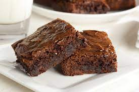
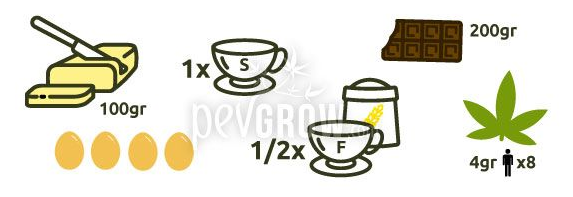

Es uno de los postres más clásicos para elaborar, pero no por eso pasan de moda. Hoy te damos una sencilla receta de brownie muy fácil de hacer.


INGREDIENTES:
- 100 gramos de mantequilla
- 4 huevos
- 1 taza de azúcar
- 1/2 taza de harina
- 200 gramos de chocolate para fundir
PROCEDIMIENTO:
1-Primero ponemos el horno a calentar a 120ºC (no nos va a costar nada elaborar la masa, así que lo ideal es que esté listo para meter nuestra mezcla en cuanto la terminemos de preparar).

2-A continuación, pondremos a calentar una sartén, a la que añadiremos la mantequilla y el chocolate que iremos mezclando poco a poco.

3-Mientras esto se va haciendo, en un bol, añade los huevos, el azúcar, la harina y bate. Puedes hacerlo con un tenedor o, la verdad, lo más fácil (aunque no sea, gastronómicamente hablando, lo más profesional) es coger la batidora y en medio segundo está todo mezclado y sin grumos desagradables.
4-Por último, añades el chocolate y lo metes al horno. ¿Cuánto tiempo? Depende de la paciencia que tengas. A 120 grados, en 60 minutos lo tienes. Para saberlo sólo tienes que abrir el horno cuando haya pasado ese tiempo, pinchar con la punta de cuchillo el brownie y si el bizcocho sale limpio, es que está listo.